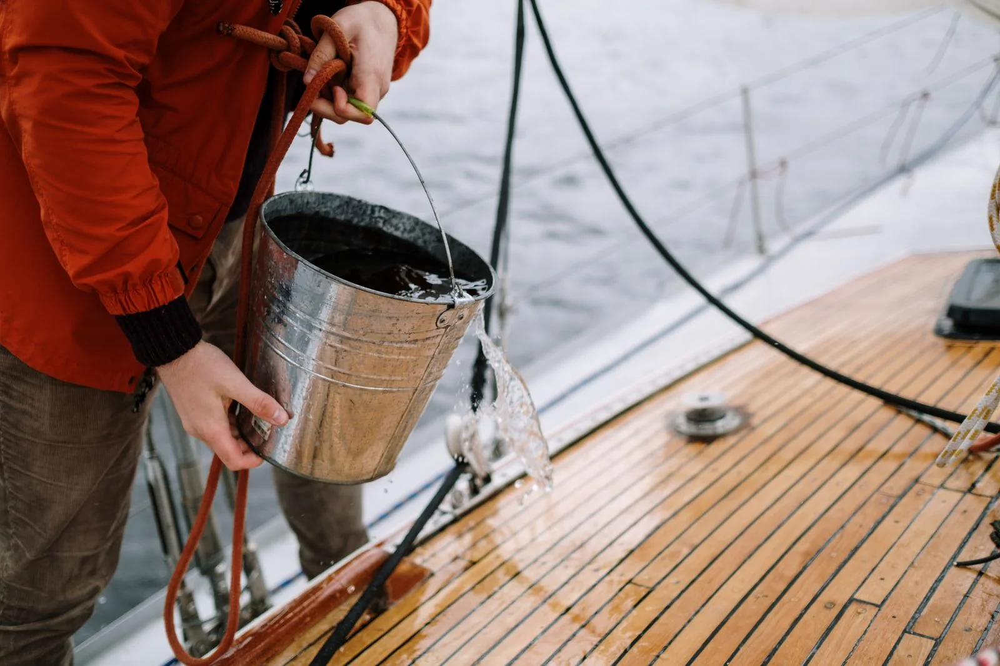
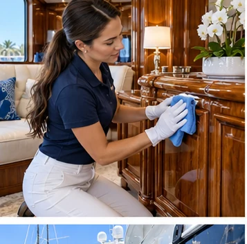
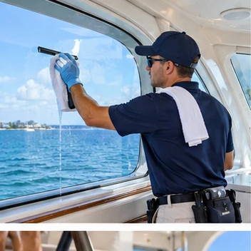
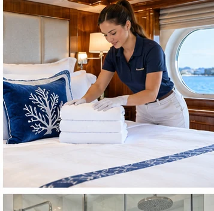
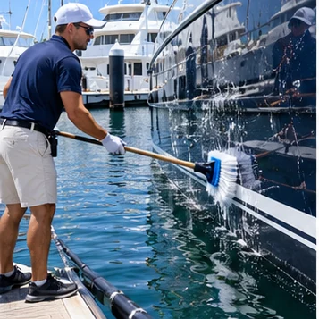
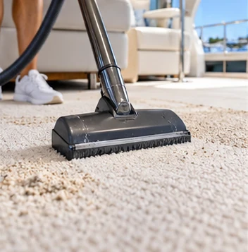
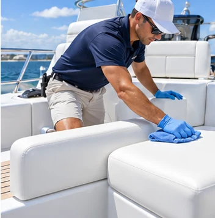
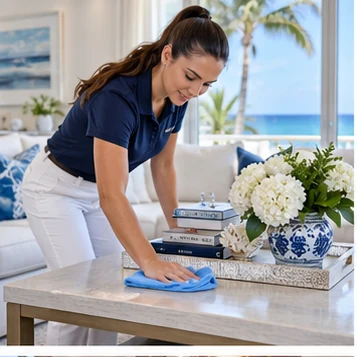
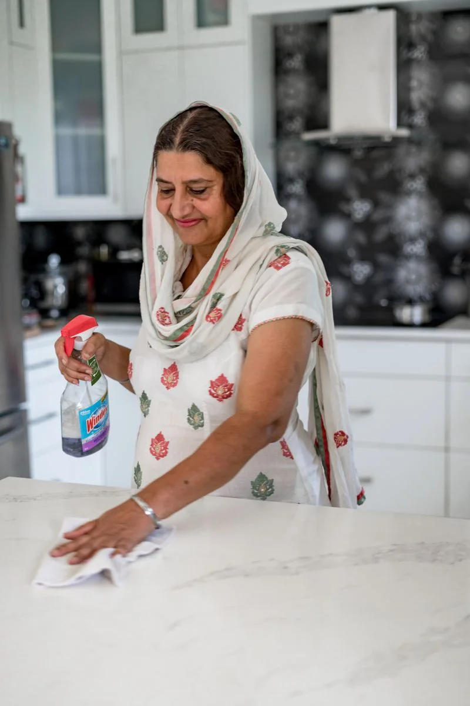
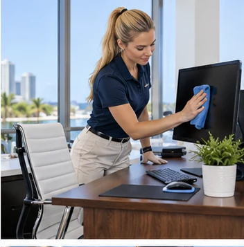

Yacht care
Deck & teak detail
Careful surface cleaning to keep your deck welcoming and ready to enjoy.
Ask about this service ↗From a lived-in family kitchen to the cabin of a favorite yacht, Clino brings consistent care and a beautifully finished clean.

Choose a service to start a conversation with our team. We tailor each clean to your property and priorities.

Careful surface cleaning to keep your deck welcoming and ready to enjoy.
Ask about this service ↗
A detailed clean for bright, comfortable onboard living areas.
Ask about this service ↗
Streak-conscious glass care to bring back those marina and ocean views.
Ask about this service ↗
Thoughtful wipe-downs that leave high-touch surfaces fresh and cared for.
Ask about this service ↗
Fresh bedding and tidy cabin details for a comfortable return aboard.
Ask about this service ↗
Professional exterior washing planned around your vessel and marina.
Ask about this service ↗
Careful vacuuming and surface care to freshen the spaces you use most.
Ask about this service ↗
A considered clean of seating and entertaining spaces on deck.
Ask about this service ↗
Reliable recurring or one-time cleaning, shaped around your household.
Ask about this service ↗
Detail-focused attention for the rooms and surfaces you use every day.
Ask about this service ↗
A fresh, cared-for workspace that helps your team focus and welcome clients.
Ask about this service ↗Call Clino and we’ll help you choose the right service for your space.